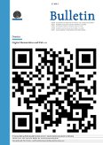

|
Latest News
 Service‐oriented Architectures (SOAs) for the Humanities: Solutions and Impact Service‐oriented Architectures (SOAs) for the Humanities: Solutions and Impact
Large research infrastructure projects in the Humanities and Social Sciences such as Bamboo, CLARIN, DARIAH, eAqua, Metanet and Panacea increasingly offer their resources and tools as web applications or web services via the internet. Such web‐based access has a number of crucial advantages over traditional means of service provision via downloadable resources or desktop applications. Since web applications can be invoked from any browser, downloading, installation, and configuration of individual tools on the user's local computer is avoided.
The paradigm of service‐oriented architectures (SOA) is often used as a possible architecture for bundling web applications and web services. While the use of web services and SOAs is quickly gaining in popularity, there are still a number of open technology and research questions which await more principal answers. The purpose of this joint CLARIN/DARIAH workshop is to provide a forum to address these issues.
Call for Papers The University of Sheffield’s Humanities Research Institute with the support of the Network of Expert Centres and Centernet is delighted to announce its Call for Papers for a three-day conference to be held in Sheffield during 6th – 8th September 2012. Keynote speakers - Professor Andrew Prescott (Head of Department, Department of Digital Humanities, King’s College London)
- Professor Lorna Hughes (University of Wales Chair in Digital Collections at the National Library of Wales)
- Professor Philip Ethington (Professor of History and Political Science, University of Southern California and Co-Director of the USC Center for Transformative Scholarship)
Submission process and deadline Proposals should be submitted in Microsoft Word or plain text format to the following email address: dhc2012@sheffield.ac.uk
The deadline for submissions is 30th April 2012. All proposers will be notified by 11th May 2012. For further information, see http://hridigital.shef.ac.uk/dhc2012
From the 2nd - 6th of July 2012 Digital.Humanities@Oxford Summer School (DHOXSS) delegates visiting the University of Oxford, UK, will be introduced to a range of topics suitable for researchers, project managers, research assistants, and students who are interested in the creation, management, or publication of digital data in the humanities.
Delegates will follow one of a 5 day workshops on:
* An Introduction to XML and the Text Encoding Initiative
* Working with TEI Texts (Advanced)
* An Introduction to Digital Humanities Tools and Approaches
* A Humanities Web of Data: Publishing, Linking, Querying and Visualisation on the Semantic Web
 "The (digital) Future of Academic publishing? Digital Research Infrastructures for the Humanities: The DARIAH Project" is the title of the session with which DARIAH takes part in the London Book Fair 2012. Sheila Anderson, Director of the Centre of eResearch, Department of Digital Humanities at King’s College London, and Tobias Blanke, Senior Lecturer in the Centre for e-Research and one of the directors of DARIAH, et al. will discuss about DARIAH which is seen as a cutting-edge – and in many ways controversial – initiative by the publishing ‘establishment’. "The (digital) Future of Academic publishing? Digital Research Infrastructures for the Humanities: The DARIAH Project" is the title of the session with which DARIAH takes part in the London Book Fair 2012. Sheila Anderson, Director of the Centre of eResearch, Department of Digital Humanities at King’s College London, and Tobias Blanke, Senior Lecturer in the Centre for e-Research and one of the directors of DARIAH, et al. will discuss about DARIAH which is seen as a cutting-edge – and in many ways controversial – initiative by the publishing ‘establishment’.
For further information follow this link.
|
Tuesday, 28 February 2012
The Bulletin 01/2012 of the Swiss Academy of Humanities and Social Sciences (SAHS) including the dossier Digital Humanities und Web 2.0 has recently published an article about DARIAH. This article features the goals of DARIAH and the importance of a research infrastructure across the arts and humanities highlighting the aims of the Virtual Competency Centres. "Das zentrale Ziel von DARIAH ist es, die mit digitalen Methoden und Hilfsmitteln arbeitenden Geistes- und Kulturwissenschaftler in Forschung und Lehre disziplinübergreifend zu unterstützen." Read the complete article (in German language) here.
Wednesday, 15 February 2012
The HERA (Humanities in the European Research Area) Network (http://www.heranet.info/) is pleased to announce a new Joint Research Programme (JRP) on Cultural Encounters. Nineteen research councils from 18 countries and the European Commission are making up to €18.5 million available. The research programme will fund new and exciting humanities-centred projects on Cultural Encounters involving researchers from three or more participating countries.
The deadline for submission of outline proposals will be Friday, 4 May 2012. For further information see http://www.heranet.info/hera-joint-research-programme-2
Wednesday, 01 February 2012
The International Conference on Research Infrastructures (RI), ICRI 2012, will take place on 21-23 March 2012 in Copenhagen under the auspices of the Danish Presidency of the European Union. This will be the Seventh Conference on Research Infrastructures supported by the European Commission but for first time it will address the international aspects of the RI including e-Infrastructures activities and their role for tackling the Global Challenges. To get more information about the ICRI concept, please follow this link: http://ec.europa.eu/research/infrastructures/pdf/icri_concept.pdfMore information about the conference you will find here: http://www.ereg.me/ehome/31679/50320/?&
The GRDI2020 Roadmap Report "Global Scientific Data Infrastructures: The GRDI2020 Vision" is now available in its final release (December 2011). Global Research Data Infrastructures must be developed for harnessing the accumulating data and knowledge produced by the communities of research, optimizing the data movement across scientific disciplines, enabling large increases in multi- and inter- disciplinary science while reducing duplication of effort and resources, and integrating research data with published literature.GRDI2020 announces the final release of its 10 year visionary Roadmap for Global Research Data Infrastructures. You can download the Roadmap at this link.
|
|
|
|
|
|
Page 8 of 14 |
|
Information brochure

Download PDF 
|